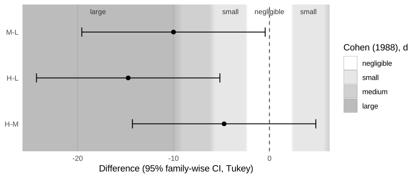
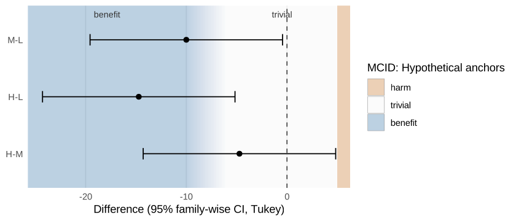
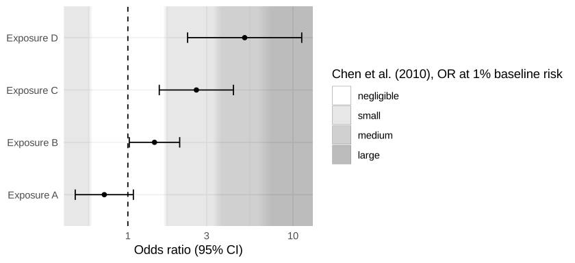

effectzones is a ggplot2 extension that draws interpretive background zones behind estimates and confidence intervals, in forest plots, post-hoc contrast plots and coefficient plots.
-
geom_es_zones(): effect-size magnitude zones (negligible / small / medium / large …), symmetric around the null. -
geom_mcid_zones(): clinical relevance zones (harm / trivial / benefit) defined by a minimal clinically important difference, which can be asymmetric and uncertain.
The package does not compute, classify or reinterpret inference. It never looks at your estimates; it only draws a background against which the intervals you already have are read. There is no default benchmark set and no automatic MCID: you choose the thresholds, and the legend records where they come from.
Installation
# install.packages("pak")
pak::pak("drhrf/effectzones")Tukey contrasts over effect-size zones
Standardised thresholds (here Cohen’s d, used only as an illustration; see the vignette on choosing a set) are converted to the raw scale of the contrasts with the model’s pooled SD. plot_contrasts() says which SD it used.
library(effectzones)
library(ggplot2)
fit <- aov(breaks ~ tension, data = warpbreaks)
plot_contrasts(
TukeyHSD(fit),
zones = geom_es_zones(es_benchmarks("cohen_d"), labels = TRUE),
model = fit
)
#> ℹ Converting d thresholds with the model's pooled (residual) SD = 11.9.
#> Set `sd` in the zones layer to use a different SD.
The same contrasts over MCID zones
An asymmetric MCID: deterioration at 5 breaks, improvement somewhere between 6 and 10 breaks (say, two anchor studies that disagree). Fewer breaks are better. The uncertain threshold is drawn as a fade across its range.
mcid <- mcid_thresholds(
lower = c(-10, -6), upper = 5,
direction = "lower_better",
source = "Hypothetical anchors"
)
plot_contrasts(TukeyHSD(fit), zones = geom_mcid_zones(mcid, labels = TRUE))
An odds-ratio forest plot on a log axis
Ratio zones are symmetric on the log scale around 1. The Chen, Cohen & Chen (2010) odds ratios correspond to d = 0.2 / 0.5 / 0.8 only at a 1% baseline risk.
or <- data.frame(
term = c("Exposure A", "Exposure B", "Exposure C", "Exposure D"),
estimate = c(0.72, 1.45, 2.60, 5.10),
lower = c(0.48, 1.02, 1.55, 2.30),
upper = c(1.08, 2.06, 4.36, 11.3)
)
ggplot(or, aes(estimate, term)) +
geom_es_zones(es_benchmarks("chen_or"), scale = "log", null = 1) +
geom_vline(xintercept = 1, linetype = 2) +
geom_errorbar(aes(xmin = lower, xmax = upper), width = 0.2) +
geom_point() +
scale_x_log10() +
labs(x = "Odds ratio (95% CI)", y = NULL) +
theme_minimal()
Add the zones layer before points and error bars so they are drawn on top. Zones do not change the axis limits unless you set expand = TRUE.
What effectzones deliberately does not do
It does not label results as “meaningful” or “likely beneficial”, and it does not compute the probability that an effect lies in a zone. That is magnitude-based inference, which has been shown to be statistically unsound (Welsh & Knight 2015; Sainani 2018). See vignette("effectzones") and DESIGN.md.